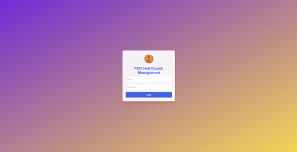
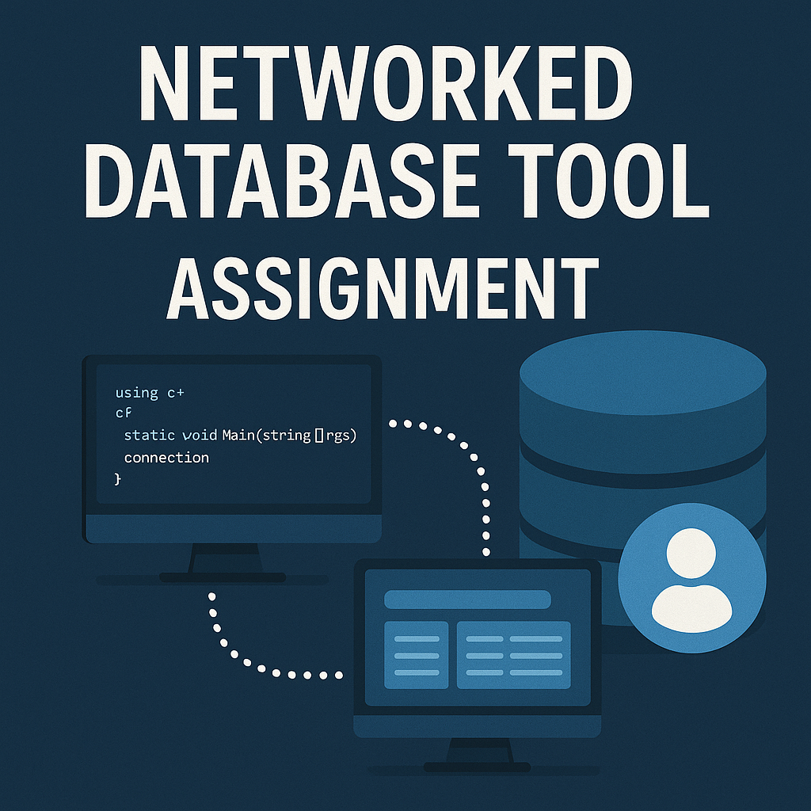

Featured
Projects
A mix of academic work and projects. Selected highlights below include short demo videos.
FloodBuddy - Real-Time Flood Data
Developed an application to provide real-time flood data and enhance disaster response. Surfaces live alerts and map overlays to help communities prepare and respond faster.
React Native
REST APIs
Maps
Node.js
GrabIT - Checkout-Free Shopping
Mobile app that lets customers scan products, pay securely, and receive a QR receipt for verification at exit. Includes admin dashboard for stock & analytics.
React Native
Node.js
Express
Supabase (Postgres)

whois - Networked Database Tool
C# client–server application exposing a MySQL-backed user accounts database over the network. Includes a static client and a TCP server that handles lookups, updates, and inserts, with simple URL-style queries
C#
MySQL
TCP Server
Client App
Multithreading
Transport Network Route-Finder
C++ implementation of data structures and algorithms for a transport network (nodes & arcs) with precise input/output formats. Supports distance queries, neighbour discovery, and journey validation; includes performance diagnostics (visited node/arc counts) and fast route-finding using Dijkstra/A*.
C++

Smart Queue Prioritisation - Salesforce Omni‑Channel
Implemented an intelligent routing system for Salesforce Service Cloud. By separating simulated Live Chat and WhatsApp requests into distinct Omni‑Channel queues and assigning different routing priorities, I eliminated missed chats and improved response times. The solution uses Apex, custom queues, presence statuses and dashboards all built in a free Developer Edition without paid messaging licenses.
Salesforce
Apex
Service Cloud
Omni‑Channel
Want more detail? get in touch.